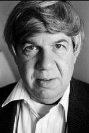

STEPHEN JAY GOULD
Jochen Winter'in uyarladığı versiyondan tercüme edilmiştir.
İnsanlığın tarihinde günümüze dek üç büyük aşağılanmadan söz edilir: Kopernik, dünyayla birlikte insanı da evrenin merkezi olmaktan çıkardı. Darwin insan varlığının soykütüksel tarihini hayvanlar âleminin bir yerlerinden başlattı. Freud, bilinçdışının keşfiyle birlikte, insanın kendi evinin hakimi olmadığını anladı. Zoolog ve jeolog Stephen Jay Gould (1941 yılında New York'ta doğdu, 2002 yılında öldü) ise bize bir başka aşağılanma ayırmıştır: İnsan demektedir, ne yaratılışın tacıdır ne de evrimin doruğu. "Hata", Gould'a göre, yeryüzündeki hem en basit hem de en eski yaşam biçiminden, bakterilerden kaynaklanır. Çokhücreli yaşam biçimleri, balıklar, kuşlar, memeliler ve hatta insan kuşkusuz ki son derece karmaşık olgulardır, ama, Gould'un argümanı şudur ki, insan "evrimin devasa soykütük ağacındaki önemsiz küçücük bir dal"dan başkası değildir. Diğer deyişle, "yüksek" canlı yaratıklar ancak bir tesadüfün sonucunda oluşmuşlardır.
Stephen Jay Gould Harvard'da jeoloji profesörüydü, Harvard'daki karşılaştırmalı zooloji müzesinde paleontoloji bölümünde omurgasızların konservatörü ve bilimler tarihi bölümünde yardımcı üyeydi. 1996 yılında New York üniversitesinde biyoloji dalında araştırmacı profesör oldu. Fransızcada yayımlanmış eserleri: Comme les huit doigts de la main (Point-Seuil, 2000), L'éventail du vivant (Point-Seuil, 2001), La vie est belle (Points-Seuil, 2004) ve La structure de la théorie de l'évolution (2006).

GOULD
Stephen Jay Gould, evrim ile ilerleme arasında net bir ayrım yapıyorsunuz; bunun anlamı, doğada meydana gelen evrimin ille de bir yükseliş olmadığı mıdır?
Zaman içerisinde daha karmaşıklaşan ve dolayısıyla evrimden söz etmeye yönelten kimi türler elbette var. Ama eğer evrimi bütünü içinde düşünürsek, bu türden bir eğilim ayırt etmek imkânsızdır, çünkü yeryüzünde üç buçuk milyar yıl önce ortaya çıkmış ilk tekhücreliler bakterilerdi. Bunlar bugün de en yaygın organizmalardır. Yaşamın bütün tarihi bakterilerin egemen etkisi altındadır, bunlar her yerde ve sürekli olarak mevcuttur. Dolayısıyla ben yaşamın baştan itibaren evrim geçirdiğine, giderek çeşitlenen çevresel koşullar içinde giderek daha fazla biçimin ürediğine itiraz etmiyorum, ama bu çeşitliliğin belli bir hedefe yönelik bir dinamiğe ya da ilerleme yönünde giden bir baskıya dayandığını asla kanıtlamaz. Bu yanlış izlenimin ortaya çıkmasının tek nedeni bizim kendi türümüz üzerine odaklanmaya çok alışmış olmamızdır. Nörolojik açıdan insan varlığı kuşkusuz ki en olgun yaratıktır, ama evrimin devasa soykütük ağacındaki küçük bir dalı temsil etmektedir. Böcekler ise canlı hayvan yaratıkların % 80'ini oluşturmaktadır. Onlar son derece dirençlidirler ve muhtemelen bizden daha başarılıdırlar; her şeye rağmen, onların evrimi ne büyüyen bir zekâ düzeyine ne de herhangi bir ilerleme işaretine kanıttır.
Özetlersek: Evrim, toplam olarak, daha fazla karmaşıklık üretiyor ama doğrusal süreklilik yok denebilir mi?
Doğru. Evrim tarihinde en karmaşık canlı varlıkların soy zincirini oluşturursak, bu zincir bakteriyle başlar, daha zengin yapılı bir tekhücreliyle devam eder ve kuşkusuz ki bir denizanası, bir notil ve bir balıkla devam eder. Daha sonra kurbağagillerden biri, bir dinozor, bir memeli ve sonunda, verili bir anda, insan ortaya çıkar. Ama evrimin bir sekansı söz konusu değildir: biz ne denizanasından, ne dinozordan geliyoruz, zararsız küçük bir sürüngen ailesindeniz.
Darwinci ayıklama teorisi de kalıcı bir ilerleme olduğunu ima ettirecek herhangi bir öğe içermiyor, değil mi?
Hayır, o teori de özellikle doğal çevreye uyum mekanizması üzerinde temellenmektedir. Bütün organizmalar kendi soylarından gelenlerde bir aşırılık üretirler ve bunlar da genetik olarak birbirlerinden ayrılırlar. Dışsal değişimlere tesadüfen daha iyi uyum sağlayanlar hayatta kalır. Bu durum herhangi bir ilerlemenin varlığına dair bir şey söylememektedir. Örneğin ev sahibinin bedeni içinde ya da üzerinde yaşayan ve gayet basit bir biçim almış olan bir parazit, çoğalan minicik bir doku da bu gezegen üzerinde yaşayan en karmaşık yaratık kadar çevresine uyumludur. Darwin bunu açıkça ifade etmiştir. Not defterlerinden birine şunu, biraz da kendine yönelik olarak yazmıştır: Yüksek ya da alçak organizmalardan asla söz etme, söz konusu olan tek şey bulunulan ortama uyum sağlamak. Ben Darwin'in kavramının, yani ilerleme olmadan, çeşitlenme yoluyla evrim kavramının genel olarak kültür tarafından asla gerçekten dikkate alınmadığı kanısındayım, çünkü insanlar burada mutlaka bir ilerleme görmek istiyorlar. Bu onları teskin ediyor: Böylelikle kendilerini daha baştan itibaren hedefi insan varlığı olan hesaplanabilir bir sürecin doruğunda hissedebiliyorlar. Ama biyologlar arasında, bugüne dek, doktriner görüş, evrimin yerel bir uyumlanmadan başka bir şey olmadığı yönündedir.
Bugünkü bilgi düzeyimizden bakıldığında, insan beyni yaklaşık yüz bin yıl içinde adım adım dönüşmüştür. Her şeye rağmen siz, bu kapasite genişlemesinin sonuçları hakkında "kültürel evrim" terimini kullanmaktan kaçınıyor ve "kültürel dönüşüm" terimini tercih ediyorsunuz.
"Kültürel evrim" deyimi benim hoşuma gitmiyor, çünkü kültürel dönüşüm ile biyolojik evrim arasındaki benzerlikler, farklılıklarından çok daha önemsiz. Farklılıklar terazide çok daha ağır basar; bu nedenle, kültürel süreci Darwin'in anladığı anlamda doğal sürece bağlama isteği yanılgıdır. Bunu iki örnekle açıklayacağım. Birincisi: Öğrendiğimiz her şeyi anında bir sonraki kuşağa öğretiyoruz, bizim öğrenmiş olduğumuz nitelik ve becerileri onlara aktarıyoruz. Buna karşılık, biyolojik evrimin bu türde hiçbir ilkesi yoktur: soydan gelen bireyler özellikle gen alırlar ve bu genler eğitsel deneyimlerden ve yararlı edimlerden kesinlikle etkilenmez. İkinci olarak: İnsanın yol açtığı kültürel dönüşüm farklı geleneklerin etkileşiminin sonucudur, örneğin tekerlek bir kültürden diğerine bu şekilde geçer. Biyolojik evrimde böyle bir şey yoktur; bir tür ayrıldığında, tuttuğu yönü daima korur. Başka türlerle ekolojik ilişkileri sonradan da elbette sürdürür, ama genetik kaynaşma yoktur.
Kültürel dönüşüme biyolojik bir denk ararsak, evrimden ziyade mikrop bulaştırmadan söz etmek gerekir.
Consilience adlı kitabında sıralı-genetik evrim terimini icat eden ve kültürel mutasyonlara insan tarihinin her döneminde genetik mirasın dönüşümünün yol açtığı ama kültürel mutasyonların da genetik mirası etkilendikleri olgusu üzerinde ısrar eden ve sonuç olarak doğal tarih ile kültür tarihinin birbirine bağlı olduğunu ileri süren sosyo-biyolog Edward O. Wilson'ın tezine karşı önemli bir itirazı zımnen yükseltiyorsunuz.
Bu bağ çok gevşektir! Bilincimizin genetikle koşullandığına hiç kuşku yok. Bu bilinç olmadan, kültürün ne olduğuna dair hiçbir fikrimiz olamaz. Başka deyişle: Genetik evrim bizi belirli bir zihinsel işleyiş tarzı geliştirmeye yöneltmeseydi, kültür tarihi olmazdı. Ama aynı zamanda, kültür tarihinin insan beyni üzerinde geriye dönük en ufak bir etkisinin bile olmadığı kanısındayım. Benim bakış açımdan, bugünkü beynimiz, uygarlığa benzer hiçbir şeyin olmadığı binlerce yıl önceki insanların beyniyle tıpatıp aynı yapıdadır.
Kültürün başlangıcını hangi evreye götürüyorsunuz? İnsan varlığı ne zamandan beri çevreyi kendi fikirlerine göre şekillendiriyor ve böylelikle kültür tarihinden ve tinin tarihinden söz etmek mümkün oluyor?
Bu türden sorunlar bilimsel araştırmadan çok tanımlarla ilgilidir. Kimileri kültürel evrimin, alet kullanımına dair açık seçik kanıtlar olduğu yerde başladığını ileri sürmektedir. Tersine, dil olmadan böyle bir şeyin düşünülemeyeceğini ileri sürenler de vardır, ama dil çok daha geçtir. İnsan yaklaşık iki milyon yıldır alet imal edip kullanmaktadır ve ancak bunun sonucunda yaşam koşullarını dönüştürmüştür. Bunun bir kültür özelliği olarak görülüp görülmemesi kullanılan açıklama yöntemlerine bağlıdır.
Sonuçta, benlik bilincinin kökeninin karanlıkta kaldığı ve asla kesin olarak belirlenemeyeceği fikrini savunuyorsunuz.
Bilimsel düzlemde, insan varlığının atalarının bizim "bilinç" terimiyle belirttiğimiz entelektüel enerjiye sahip olmadıklarını saptayabiliriz. Bununla birlikte, ardından beyin daha da büyümüştür, dilin evrimine paralel giden bir özdüşünüm ve soyutlama kapasitesinin ortaya çıktığını gördük. Bu sürecin belirgin, son derece karmaşık, ayıklama teorisiyle uyumlu bir gerekçeyle gerçekleştiği kesindir. Ne var ki, bu gerekçeyi biz bilmiyoruz. Bütün bunların niçin olduğuna bilimin bir cevabı yok, hatta bunların muhtemel bir kozmik anlamı olup olmadığını da bilmiyoruz. Benim bakış açımdan, bu problem ve benzer düzeydeki diğer problemler çözümsüz kalıyor.
Örneğin Lascaux ya da Altamira'da bulunan çok erken tarihli resim temsillerine bakıldığında, varoluşumuzun merkezi motiflerinin taklit edilemez işaretlerden oluşan bir dile aktarılışındaki güç bizi etkiler. Sembol yaratma yeteneğinin insan varlığının temel özelliği olduğunu ileri süren Ernst Cassirer'i onaylamamız gerekmez mi?
Elbette, ama bu yetenek, hayat ya da Tanrı hakkında içinde barındırdığı düşüncelerin doğru ya da yanlış olduğunu bilmemizi sağlayacak türde hiçbir bilgi vermez, çünkü burada yalnızca insan ruhunun ifade biçimleri söz konusudur. İnsan ruhu kuşkusuz ki idealleştirebilecek ve dolayısıyla semboller üretebilecek ölçüdedir, ama bu durum, doğanın gerçekten de bu türden arketipler içerdiği anlamına gelmez.
Bununla birlikte, ölüm etkeniyle karşı karşıyayız. Hayvanın tersine, biz öleceğimizi biliyoruz. Bu bilginin kendisi, metafizik perspektiflere olan ilginin canlı tutulması ve hatta Georges Bataille'ın dediği gibi bu perspektiflerin dayatılması için yeterince ağırlık taşımaktadır.
Tamamen. Örneğin Freud'un tamamen benzer bir argümanı vardı. Beynimiz, kendi ölümümüzün bilincine varmamız gerektiği için değil, tamamen evrimden kaynaklı unsurlar temelinde büyümüş olsa da, bu ölümlülük bilinci yine de hiç yaşamadığımız kadar acı verici ve altüst edici bir şeydir ve buna yine de bir açıklama bulmamız gerekir. Freud dinin öncelikle bu kesinliğin sonuçlarına hakim olma teşebbüsü olduğu kanısındaydı ve bu noktada ona katılıyorum. Varoluşumuzun geçiciliği hakkında açık seçik fikirler edinerek gerçek insan doğasına yaklaşıyoruz.
Ama biraz önce, kutsallığın paradigmalarının doğanın değil kültürün tarihine içkin olduğunu ima ettiniz.
Teoloji ve kültürel dönüşüm ancak bir toplumun durumu ve hedefleriyle ilişkiye sokulurlarsa anlam taşır. Doğa ahlaki bir düzen olmadığından, teolojik kavramların burada nasıl bir yeri olabileceğini bilmiyorum.
Bununla birlikte kesin olan şey, çok eski zamanlardan bu yana insanın doğayı, tek başına düzeninin garantisi olan yüksek bir gücün yansısı olarak az çok kavramış olduğudur. Bu ölçü içerisinde, kutsalın temsili insanın bilincinin karakteristik bir özelliğiydi.
Evet ama bu durum maddi dayanağı olmayan maddiyatsız kendiliklerin gerçekten varolup olmadıklarını söylemez. Dinin sosyolojik yanları da antropolojik yanları da incelenebilir ve bütün kültürlerin az çok belirgin bir şekilde kutsal kavramına yöneldikleri keşfedilebilir; ancak bu yine de Tanrı'nın varlığını kanıtlamaz. İnsanın bir inanca bağlanma eğiliminden yola çıkarak, yöneldiği nesnenin var olduğu ya da saldırılamaz nitelikte olduğu sonucuna varmak ciddi bir hata olur. Unutmayalım: Ruhumuz son derece kusurlu bir alettir. Örneğin gerçeğe benzerlik teorisiyle rasyonel olarak yüzleşmek insan varlığı için güçtür; çoğu insanda, yedi mühürlü kitap etkisi yapar. Bu durum yine de bu teorinin kimi bilimsel sorunları çözmeye elverişli bir yöntem sunuyor olmasını asla değiştirmez.
Darwin'in evrim teorisinin Tanrı'nın varlığını bir çırpıda dışladığını söyleyebilir miyiz?
Hayır. Burada tek söz konusu olan şey, genel olarak bilim gibi evrim teorisinin de dinle ilgili sorunlarla ilgilenmemesidir, dolayısıyla buna cevap vermez. Aşırı güçlü bir kuvvetin evren üzerinde etkisi olsa da, bu, bilimin kapsadığı ve doldurduğu referans çerçevesinin dışında kalır. Ampirizme ve gerçekliğe dayanır; geri kalana dair açıklaması yoktur. Müminler şundan kuşku duymamalıdır: Onlar kendi bakış açılarını asla doğanın gerçek yapıları üzerinde temellendirmemişlerdir.
Bu, bilimin ve dinin birbirinden ayrı kaldığı anlamına mı gelir? Birbirlerinin itkilerinin içinden geçmelerine, karşılıklı olarak birbirlerini beslemeye ve böylece o zamana dek sahip oldukları hudutları aşmalarına katkıda bulunan bir diyaloğa giremeyecekler mi?
Her temel sorunun bir bilimsel boyutu, bir de dinsel ya da etik boyutu vardır. Karşılıklı yaklaşım ve yöntemleri gerçeklikten farklı alanları hedeflediğinden bunu birbirlerinin içinde eritemezler. Ama iki boyut eşit bir düzlemde birlikte varolur ve böylece bir yerde bilimsel cevaplar, başka bir yerde dinsel ya da etik cevaplar arayacak durumdayız. Bilim insanlarının teologlarla konuşabileceğine asla itiraz etmiyorum, tersine, karşılıklı olarak birbirlerini daha iyi anlamayı öğrenmelidirler.
Bugün biyoteknoloji alanında ister istemez buluşuyorlar. Bu müdahaleyi benimsiyor musunuz?
Her şey neye yaradığına bağlı! Büyük ölçekli bütün teknolojik dönüşümler gibi, biyoteknoloji de önemli bir potansiyele sahiptir ve bu potansiyel yararlı amaçlar için kullanılabileceği gibi zararlı amaçlar için de kullanılabilir. Dolayısıyla zararlı olabileceğini ileri sürerek bunu ne ihmal edebiliriz ne küçümseyebiliriz. Geliştirdiği yöntemler sayesinde, örneğin A vitamini içeren yeni bir tür pirince sahip olmamıza hiç itirazım yoktur. Bu vitaminin olmadığı doğal pirinç açısından önemli, hatta kurtarıcı bir evrimdir bu, çünkü beslenmelerinin temeli olarak bu pirinci kullanan yüz milyonlarca insan bu nedenle A vitamini eksikliği çekmektedir. Biyoteknoloji, eğer tarıma ve tıbbi pratiğe uygulanırsa daha sağlıklı olur.
Kültür tarihi incelendiğinde, insanın uzun süredir bitkilerde kendi ihtiyaçlarına daha iyi cevap versin diye soy arıtma teknikleri kullandığı görülüyor. Bu teşebbüslerin ve bunlarla kıyaslanabilir başka teşebbüslerin ardından, artık kendi isteğine göre bütünüyle dönüştürdüğü bir gezegende yaşıyor insan.
Beslenmemizin neredeyse bütün temel öğeleri –tahıllar, çavdar, arpa, darı, pirinç– yapay bir ayıklamanın ürünleridir: Bunları biz yetiştirdik ve genetik dönüşüme uğrattık. Bunun ötesinde, ormanları kesiyoruz, doğal döngüleri kesintiye uğratıyoruz, bazı türlerin yok olmasına neden oluyoruz. Teknoloji yeni çevresel koşullar yaratıyor, bunun da evrim üzerinde etkisi var ve Darwincilikle kesin olarak örtüşüyor, çünkü organizmalar çevrelerindeki değişimlere uyum sağlarlar ve hayatta kalanlar en iyi uyum sağlayanlardır.
Bu son yüz elli yılın teknik altüst oluşlarını Darwin'in teorisiyle uyumlandırıp uyumlandıramayacağımız bir yana, biyoteknoloji etik olarak savunulabilir olan şeylerin sınırlarını da parçalamıyor mu? İnsan varlığının ve diğer canlı varlıkların evrimine yeni bir evre katmıyor mu? Başka deyişle: Teknoloji biyolojide bir devrime mi yol açıyor?
Bazı koşullarda, kendi genetik programımızı ve organizmaların programını daha güçlü bir şekilde dönüştürdüğümüzde, evet. Bu şekilde, kültürel dönüşümün evrim üzerinde geriye - dönük bir etkisi elbette olur. Yoksa, biyolojik açıdan bakıldığında pek dönüşüm geçirdiğimiz söylenemez.
Çok sayıda göstergeye bakılırsa, giderek rafineleşen teknolojiler –yalnızca biyoloji alanında değil, iletişim alanında da– gelecekte kültürel mutasyonu hızlandıracak gibi gözüküyor.
Evet, bu bize geniş bir iktidar sağlıyor. Evrim süreci, bu türden hızlı bir kültürel mutasyona etkide bulunamayacak kadar yavaş ilerliyor; velhasıl, insan varlığının beyni ve bedeni son elli bin yıldır tıpatıp aynı kaldı. Tözsel biyolojik dönüşümler ancak genetik mutasyonlarla sürdürülebilir ve zaman içerisinde, internet ya da siber-uzay sayesinde de muhtemelen böyle olacak. Ama bu durumda, söylediğim gibi, ritmini kendimizin hızlandırdığı teknik bir ilerlemenin ikincil bir etkisi söz konusudur.
Biyolojik hudutlar insan soyunun evrimine mi sabitlenmiştir? Eğer böyleyse, bunların nasıl bir düzeni vardır?
Bu hudutların yararsızlığı açıktır; örneğin boyumuz dört metre olamaz ve uyumadan, yemeden asla yaşayamayız. Ama etik olarak arzu edilebilir tutumlar geliştirebilecek kadar esnek olduğumuzu da düşünüyorum. Bu yönde yürümek bana gerçekten anlamlı geliyor. Savaşmamayı ve kendi kendimizi yok etmemeyi doğamız gereği öğrenemeyeceğimizi sanmıyorum. Kendimizi yetkinleştirebiliriz...
Kavrama kapasitesine sahip insanı, evrim mi böyle programlamıştır? Yeryüzünde ya da evrende bilincin doğuşunun baştan itibaren istenmiş olduğunu söyleyebilir miyiz?
Bir ayrım yapmamız, bir yandan insan varlığının öngörülebilirliğine, diğer yandan ise bilinçli yaşamın öngörülebilirliğine eğilmek gerekir. Böyle bir yaratığın, iki gözü, beş parmağı ve tüm özgül niteliklerimizle birlikte, biricik olduğuna aşağı yukarı emin olabiliriz, çünkü yeryüzündeki her tür, evrimin genellikle tesadüfi olan ve her biri bir başka seyir alabilecek yüz binlerce olayının sonucuydu. Dolayısıyla, iki gözü ve beş parmağı olan bilimkurgu yaratıkları aramak boşuna olur. Buna karşılık, uzayda bilince sahip başka yaşam biçimlerinin olup olmadığını söyleyemeyiz. Bilincin bir kez ve yalnızca burada geliştiğini biliyoruz. Ama bir türün, bir çeşidin ya da bir ailenin eriştiği karmaşa düzeyinin pek bir önemi yoktur: Bunlardan herhangi birinin günün birinde yeryüzünden yok olmayacağının hiçbir güvencesi yoktur. Yaşamın tarihinde, kitlesel yokoluşların damgasını taşıyan dönemlere sürekli rastlanır. Örneğin dinozorlar nispeten iyi silahlanmış gibi gözüküyordu, ta ki büyük meteor yeryüzüne düşene dek. Topyekûn denge durumu asla kalıcı olamaz ve evrimin zamansal ölçeğiyle ölçülür.
Bu durumda, antropolog Clifford Geertz'in sorduğu soru gibi, evrimin kendi seyrini insan varlığı olmadan sürdürmesi mümkün müdür?
Elbette, üç buçuk milyar yıl boyunca bizsiz gayet iyi idare etti zaten! Jeolojik olarak ancak bir dakikadır buradayız. Bunu derken, insanın yeterince zeki olduğu ve bütün zayıflıklarına rağmen, hayatta kalabilecek kadar yeterli ahlaki duyarlılığa sahip olduğu, hatta belki de uzun süredir buna sahip olduğu kanısındayım. Karamsar biri değilim, daha ziyade trajik bir iyimserim; çoğu zaman biraz fazla geç başladığımızı saptayarak bu durumu dert ediyorum kendime.